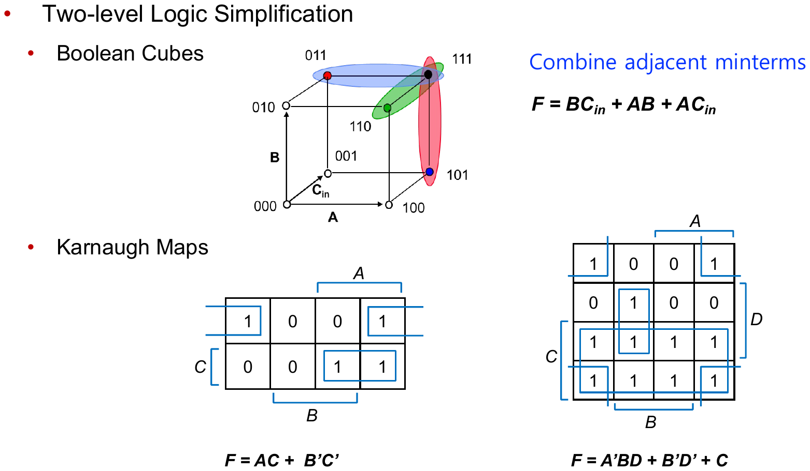

EECE274 디지털시스템설계 · 개념 정리본← 전체 목차
L04. 조합 논리 (3) — 카르노 맵
Combinational Logic (3) · 중간고사 범위
핵심 정리.
규칙 4가지: ①라벨은 Gray code(00·01·11·10) ②1을 2ⁿ개씩 최대한 크게 묶기 ③가장자리 wrap-around 인접 ④X(don′t care)는 묶음을 키울 때만 1 취급 ·
묶음이 커질수록 곱항이 단순해진다
개념 · 부울 큐브와 인접성
직관: 변수 하나만 다른 두 minterm은 합치면 그 변수가 지워진다.
n변수 부울 큐브에서 인접한 두 셀을 묶으면 변수 1개 소거, 4개 묶음이면 2개 소거. 묶음 크기는 항상 2ⁿ.
예제 · 2변수 K-map
F(A,B) = Σm(1,3): B=1인 두 셀(m1, m3)이 인접 → 묶으면 A 소거 → F = B. K-map에서 “크게 묶기”가 곧 변수 소거.
그림 · K-map 예

F = AC + B′C′, F = A′BD + B′D′ + C — 큰 묶음일수록 간단한 곱항
한 줄 요약: K-map = 인접 minterm을 Gray code로 배열한 그림; 1을 2ⁿ개 최대 묶음으로 묶으면 최소 SoP.